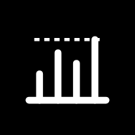

Forest Forge trade tools
Test builds of the trade tools in the Engineers Tools style: five tools and a Suite per trade. Each works offline in the browser and can be installed from the browser menu. Test index only: not public and not for search.
Electrician: 6 apps
Volt Drop & Cable SizeCable size · volt drop · BS 7671Test build · £3.99 when released · not on Google Play yetOpenMax Zs & Loop CheckMax Zs · 80 % rule · pass or failTest build · £3.99 when released · not on Google Play yetOpen
Max Demand & DiversityDiversity · maximum demand · supplyTest build · £3.99 when released · not on Google Play yetOpen